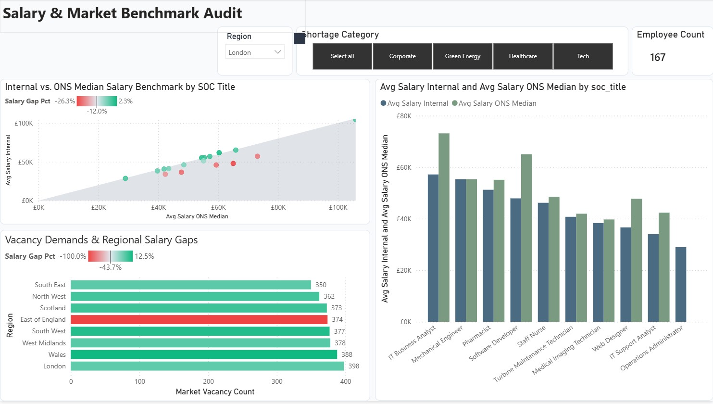
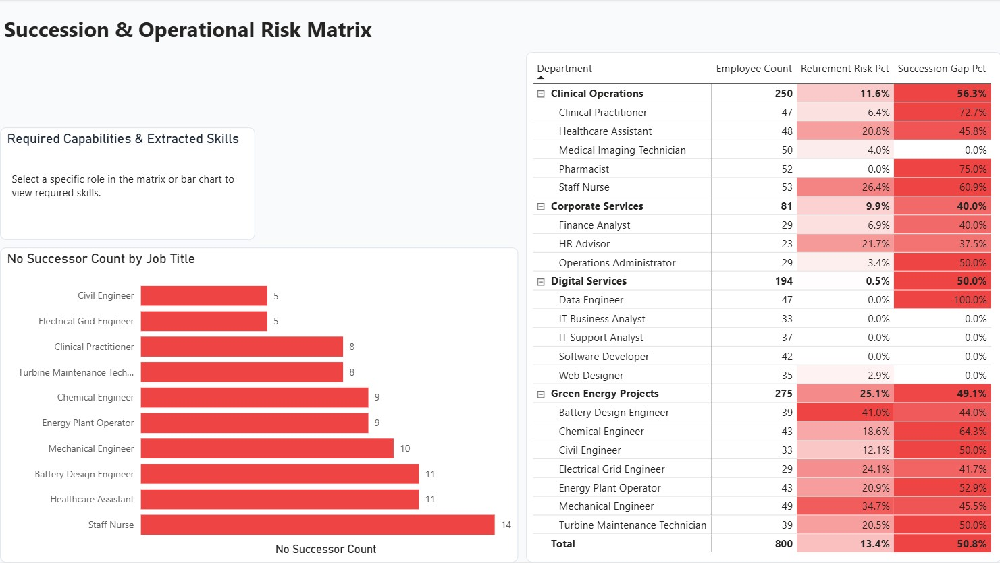

Business Intelligence • Star Schema SQL
Workforce Planning & Labour Market Intelligence
Interactive reporting suite harmonizing internal organizational human capital data with official UK benchmarks (ONS ASHE salary figures and real-time Adzuna vacancy demand) to pinpoint salary compression, skill gaps, and retirement succession risk.
- Architected dimensional star schema with fact and dimension tables optimized for high-performance Power BI DAX calculations.
- Built 3-page interactive dashboard covering executive workforce demographics, market salary benchmarking, and skills mismatch scoring.
- Engineered Python ingestion pipelines extracting and normalizing NOMIS regional wage indexes and Adzuna API feeds.

